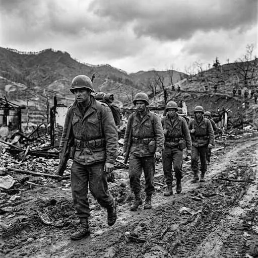
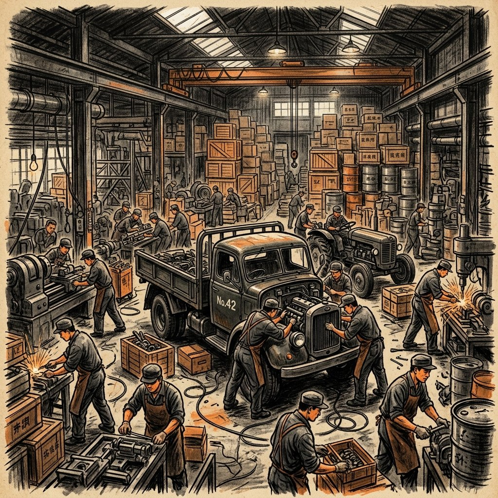

32. 冷戦の始まりとアジアの動乱
第二次世界大戦が終わった直後、世界は一つの平和に向かうのではなく、二つの大きなグループに分裂して激しく対立することになりました。この対立はアジアにも飛び火し、日本のすぐ近くで大きな戦争が勃発します。今回は、東西の「冷たい戦争（冷戦）」の仕組みと、それが日本の防衛や経済にどのような決定的な影響を与えたのかを解説します！
1. 東西の「冷戦（冷たい戦争）」の始まり
大戦後、世界は直接火花を散らす戦争（熱い戦争）ではなく、軍備拡張やスパイ戦、同盟関係などで対立する緊迫した状態に入りました。これを冷戦（れいせん）と呼びます。世界は大きく２つのグループに分かれました。
◆ 西側陣営（資本主義・自由主義）
リーダーはアメリカ。自らの市場経済や個人の自由を重んじる陣営。ヨーロッパでは軍事同盟である北大西洋条約機構（NATO）を結成しました。
◆ 東側陣営（社会主義・共産主義）
リーダーはソ連。工場や土地を国のものとして計画経済を行う陣営。軍事同盟としてワルシャワ条約機構（WTO）を結成しました。イギリスのチャーチル首相は、東側が情報を遮断して閉鎖的になっている様子を「鉄のカーテン」と表現しました。
※敗戦国となったドイツは、西側のアメリカ・イギリス・フランスが占領した「西ドイツ」と、東側のソ連が占領した「東ドイツ」に真っ二つに分裂させられました。
2. アジアの冷戦と朝鮮戦争（1950年）
冷戦の影響はアジアにも及び、激しい武力衝突（熱い戦争）が発生しました。
① 中華人民共和国の建国（1949年）
中国国内では、戦後、国民党（蒋介石）と共産党（毛沢東）の内戦が再開しました。ソ連の支援を受けた毛沢東（もうたくとう）率いる共産党が勝利し、1889年（日米修好通商条約の年）や1333年ではなく、1949年に社会主義国家の中華人民共和国が建国されました。敗れた国民党は台湾へ逃れました。
② 朝鮮戦争（1950〜1953年）
朝鮮半島は戦後、北緯38度線を境に、北（社会主義、ソ連支援の朝鮮民主主義人民共和国）と、南（資本主義、アメリカ支援の大韓民国）に分断されていました。
1950年、北朝鮮軍が突如南へ侵攻を開始し、朝鮮戦争が勃発しました。南を支援するアメリカ主体の国連軍と、北を支援する中国の義勇軍が直接激突する大戦争となり、1953年に休戦するまで朝鮮半島全体が焦土と化しました（現在も休戦中であり、分断は続いています）。

図1：北緯38度線を挟んで南北の軍が激突した「朝鮮戦争」のイメージ
3. 冷戦・朝鮮戦争が日本に与えた２大影響
すぐ隣国で起きた朝鮮戦争は、占領下の日本を大きく揺り動かし、日本社会の復活と再軍備のきっかけとなりました。
影響①：自衛隊のルーツ「警察予備隊」の創設（1950年）
日本を占領していたアメリカ軍（GHQ）は、朝鮮戦争へ出撃するために日本国内から移動し、日本の防備がガラ空きになりました。そこでマッカーサーは日本政府に対し、国内の治安維持のために武装組織をつくるよう命じました。
こうして1950年に警察予備隊（けいさつよぼいたい）が組織されました。これはのちに「保安隊」を経て、1954年に現在の自衛隊（じえいたい）へと改組・発展しました。これにより、日本国憲法第9条がうたう「戦力不保持」との矛盾についての憲法論争が現在に至るまで続くことになりました。
影響②：日本経済を蘇らせた「特需（とくじゅ）」
朝鮮戦争で戦うアメリカ軍から、兵器や車両の修理、衣類、食料、輸送サービスなどの大量の注文（朝鮮特需／特需景気）が日本国内の企業に殺到しました。
敗戦で工場が壊れ、深刻な物資不足とインフレで沈んでいた日本経済は、この特需をきっかけに急速に息を吹き返し、戦後復興から高度経済成長へとつながる劇的な復活を遂げました。

図2：朝鮮戦争の物資発注により、活気を取り戻した日本の工場のイメージ
🔥 この単元のテスト対策・暗記のコツ
-
★
冷戦（冷たい戦争）の対立構図：
・西側（アメリカ・資本主義・自由主義・NATO） vs 東側（ソ連・社会主義・計画経済・WTO）。言葉のペアを正しく整理しておきましょう。 -
★
中華人民共和国の建国（1949年）：
・指導者は毛沢東。敗れた蒋介石は台湾へ逃れました。年号「行く良く（1949）建国、中華民国から人民共和国へ」と覚えましょう。 -
★
朝鮮戦争（1950年）の年号：
・「戦後丸（1950）ごと朝鮮戦争」と覚えます。 -
★
朝鮮戦争が日本に与えた影響（超頻出・記述！）：
・経済的影響：朝鮮特需（特需景気）により、日本経済が急速に復興した。
・軍事的影響：米軍の空白を埋めるため警察予備隊が創設され、現在の自衛隊へ発展した。この２点は確実に書けるように準備しましょう！